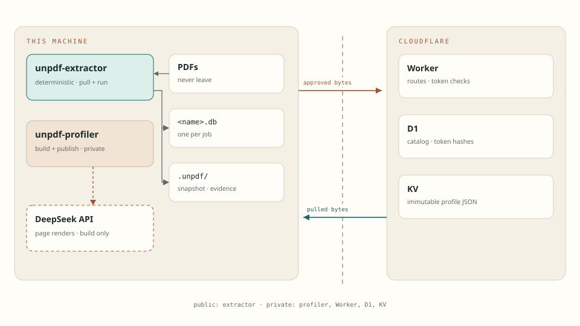
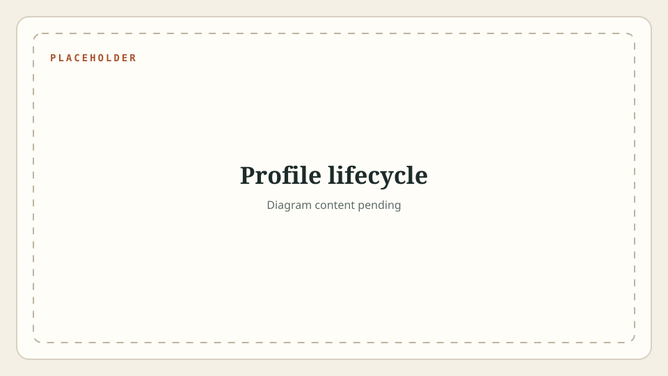
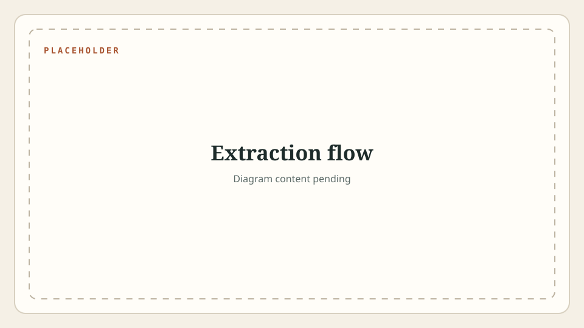
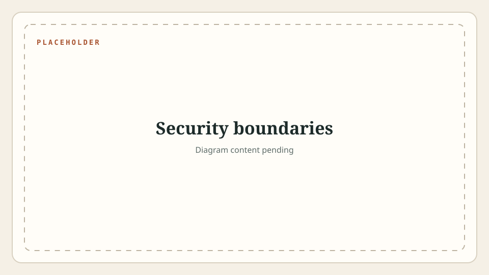

Documentation
unpdf
A profile is an approved contract about a page. Building it spends the ambiguity once: a model proposes, a person checks the boxes. Running it is deterministic — it either finds what the contract promised or refuses the file.
profile schema 3 database schema 4 no runtime model
Extraction is deterministic and runs on this machine. No model is called. The network is used only to download a profile that is not already local or cached.
The READMEs are the how-to. This page is the why: the shape of the system, the rules that hold it together, and what breaks when they do not.
01
Two machines, one frozen edge
The expensive ambiguity lives on the build side. Only a frozen file crosses to the run side.
Three artefacts form the system. The extractor is public and deterministic: PDFs go in, SQLite comes out. The profiler is private and runs a vision model over sample pages to draft a contract. The registry is a private Cloudflare Worker that stores approved contracts and hands them out.

| Artefact | Lives | May contain | Must never contain |
|---|---|---|---|
| Extractor | Public repository, this machine | Code, profiles, local databases | Registry URL, tokens, profile data |
| Profiler | Private repository, operator machine | Drafts, build output, Worker code | Production PDFs; only sample renders reach the model |
| Profile | Local folder, cache, KV | Page geometry, boxes, field rules | The document itself, extracted values |
| Registry | Cloudflare | Approved bytes, metadata, token hashes | PDFs, databases, customer data |
The dependency points one way: the profiler imports the public extractor library, never the reverse. That keeps the public package free of build-only code and of anything the profiler knows.
The same contract is validated twice, by two implementations. The Python loader checks structure and field kinds and modes. The Worker checks structure only: schema version, approval, name, page block, boxes, duplicates. A hand-published profile with a bogus kind is accepted by the registry and rejected by every extractor when it loads.
schema_version: 3. The database it fills reports schema
4 in _meta. They move independently.
02
A page of claims
Everything the extractor knows about a document type is one JSON file: where the page is, what must be printed on it, and where each value sits.
An anchor is a promise about content: these tokens are printed inside this box on this page. Every anchor in a profile is enforced — there is no optional anchor. A field is a read location: words whose centre falls inside the box, checked against the field kind.
| Rule | Limit |
|---|---|
| Pages | 1 to 100 |
| Anchors | At most 200, unique ids, every one enforced |
| Fields | At most 500, names unique across the profile |
| Page tolerance | 0 to 0.5 relative to width and height; default 0.02 |
| Boxes | Four numbers in 0..1, left < right, top < bottom |
| Kinds | text, digits, number, decimal, integer, date |
| Modes | line, multi, all |
| Published size | At most 2,000,000 characters of JSON |
{
"schema_version": 3,
"name": "example-form",
"approved": true,
"version": "1.0.0",
"page": { "count": 1, "width": 595, "height": 842, "tolerance": 0.02 },
"anchors": [
{ "id": "title", "page": 1, "box": [0.08, 0.04, 0.6, 0.08], "tokens": ["Example", "Form"] }
],
"fields": [
{ "name": "reference", "page": 1, "box": [0.08, 0.16, 0.4, 0.2], "kind": "text" }
]
}
Routing metadata is written by the profiler, not by hand:
family groups related profiles, and
match names one field plus the values that select this
member.
The extractor selects a profile by name and never accepts a
path. It reads profiles/<name>/profile.json from the
working folder or UNPDF_PROFILES, then the registry cache.
Unknown keys are ignored on load, so a profile published under an older
schema shape still runs.
approved flag is not true is refused at load
with exit 4. The flag is the only thing between a draft and production,
and it is an ordinary boolean in a file.
03
From samples to a frozen version
A profile becomes real when a person looks at the boxes. After that it can never change under the same version.

-
build
Renders the sample pages, sends them to DeepSeek for structure, then
snaps every proposed box onto the words of the local text layer. The
model proposes; local geometry decides. Output:
profile.draft.json,overlay.html, the rendered pages, and every raw model response. -
approve
Refuses a draft with semantic failures or a score below its threshold.
Requires the page count to match the sample, drops the
qualitytelemetry, and setsapproved: true. - annotate Adds the family and the match rule. A standalone document type needs no family and can skip this.
- publish Uploads the exact bytes and makes that version current. The registry re-validates the JSON, stores the artifact in KV, records the row in D1, and returns a SHA-256 the profiler compares with its own.
The build side spends more effort than the run side ever will. Up to five samples go to the model by default, and a field or anchor must appear in at least 60% of them to survive consensus. The approved score is a weighted sum: 0.50 required coverage, 0.20 contract coverage, 0.20 type checks, 0.10 optional coverage, against a 0.90 threshold.
Two sharp edges are worth knowing. The threshold travels inside the
draft, so a draft that carries its own quality.threshold is
judged by that number, not by the profiler's default. And a draft with no
quality block at all approves without any score check.
Publishing is immutable per (name, version). Repeating the
same bytes is a no-op; different bytes under the same version are
rejected. rollback moves the current pointer and touches no
published artifact. bump changes the local version and
nothing else.
Clients keep the profile they already have until their next pull, and a
pull keeps exactly one version per name. That removes the question "which
profile produced this database?" — the snapshot in .unpdf
answers it either way.
profiles/<name>/profile.json runs with no credentials
at all. The registry exists for distribution, not for execution.
04
One PDF, ordered refusals
Each step either confirms what the contract promised or records why it cannot. Nothing is guessed.

-
read words
Use the text layer. A page with almost no text but with images falls
back to local Tesseract: 300 DPI,
ara+eng, confidence at least 40, 180 seconds per page. Missing Tesseract fails that file, not the run. - check the contract Page count, then page size within the profile's relative tolerance, then every anchor: the tokens must appear inside the anchor box. Token matching tolerates a three-character substring, for OCR edges.
-
route
For a family, the PDF is read once and each member's contract and
matchrule are tried. Exactly one member must match. Zero or two matches is a quarantine with a different reason for each. - extract and validate Words whose centre falls inside a field box are grouped into lines, read in the right direction, and joined according to the field mode. The value is then checked against its kind.
File names never route anything. A family member is chosen by page geometry, anchor tokens, and the value of the match field — not by what the file is called.
The batch is built to survive itself. Duplicate file names are rejected before any PDF is opened. Identical content already in the database is skipped by hash. A PDF that cannot be read, or that matches nothing, is recorded and the next file continues.
05
What the database proves
Rows are stored with their evidence, and a document that failed is recorded rather than silently dropped.
| Table | Holds |
|---|---|
docs | One row per stored document: format, file name, SHA-256, counters |
extracted_fields | One row per field: value, page, box, method |
_field_status | One row per field: accepted, review, or missing, with a reason |
quarantine | One row per rejected document: reason, page, details |
review | A view of every flagged field, joined to its file name |
_meta | Tool version, database schema, profile version and fingerprint |
Alongside the database sits .unpdf/: a snapshot of the
contracts used, the words and extracted fields for every accepted
document, and one JSON file per quarantine. Both the database and the
evidence folder default to the PDF folder and must resolve outside the
tool's own folder.
| Status | Meaning |
|---|---|
accepted | Present and passed its kind check |
review | Present but failed a check, or a required field is empty |
missing | Absent; optional, or genuinely blank |
check re-runs the field rules against stored values. It
opens no PDF, writes no evidence, and only touches documents belonging to
the selected job. Nothing is re-extracted when a profile changes — the
database keeps what it has, and a fingerprint warning says so.
Two columns exist and are never written: docs.ocr and
extracted_fields.confidence. Treat them as reserved, not as
data.
06
What leaves, and who can mint
The boundary sits where ambiguity ends: nothing ambiguous leaves the machine, and nothing that leaves needs a person again.

| Payload | Direction | When |
|---|---|---|
| Page renders and a prompt | This machine to DeepSeek | build only |
| Approved profile bytes | This machine to Cloudflare | publish |
| Metadata and profile bytes | Cloudflare to this machine | pull, family lookup |
| PDFs, databases, extracted values | Nowhere | Never |
Credentials come from the environment as a pair, or from a credentials file as a pair. A URL and token always come from the same place: one environment variable without the other is an error, and an environment URL is never paired with a token from a file. Plain HTTP is allowed only for loopback. Redirects are refused outright, so a bearer token cannot be forwarded to another host.
Two token kinds, two jobs. The admin token is a Worker secret compared in
constant time; it can publish, move the current pointer, and manage
tokens. A user token looks like unpdf_ plus 64 hex
characters, is shown once, and is stored only as
HMAC-SHA256(pepper, token). Revoking one token does not
affect any other; changing the pepper invalidates all of them.
This page follows its own rule: no registry hostname, no token, no real profile content, no customer data. Nothing here would need redaction if the repository became public.
07
Exit codes and whose job it is
A code tells a script what happened. The reason tells a person what to do.
| Code | Meaning |
|---|---|
| 0 | clean: every field accepted |
| 1 | nothing to do, or a usage or setup mistake |
| 2 | review needed: at least one field needs a person |
| 3 | at least one PDF could not be read, or the registry failed |
| 4 | a PDF was quarantined, or the profile is not approved |
3 wins over 4, and 4 wins over 2. Documents that did pass are still saved.
Code 1 sits outside that chain: it means nothing ran, or nothing needed to run. Command-line parsing deliberately exits 1 instead of argparse's default 2, so that 2 only ever means "a human should look at a value".
| Message | Code | First move |
|---|---|---|
Unknown profile 'x'. | 1 | Check the name, or set registry credentials to download it |
No PDFs in ... | 1 | Point the command at the folder that holds the PDFs |
Folder not found: ... | 1 | Fix the path; nothing was read |
No database at ... | 1 | check needs a database from an earlier run |
Family 'x' has N approved profile(s)... | 1 | Pull the missing members |
Profile 'x' is not approved. | 4 | Approve it, or select a different profile |
quarantine <file>: expected N page(s), found M | 4 | The folder and the profile disagree |
quarantine <file>: no profile subtype matched | 4 | No family member describes this document |
quarantine <file>: matched more than one profile | 4 | Tighten a match rule |
Registry rejected the token... | 3 | Check the token, or issue a new one |
Profile hash mismatch... | 3 | Retry the pull; do not use the file |
Duplicate PDF file names in ... | 1 | Rename the files; nothing was read |
Three unhappy states, three owners:
review means a person reads one field;
quarantine means the folder or the profile is wrong;
failed means the file or the tool could not do its job.
08
Rules worth keeping
Each of these rules was chosen over an obvious alternative. The cost is real; it is listed next to the rule.
| Rule | Rejected alternative | Cost accepted |
|---|---|---|
| A profile is data, not code | One parser per document type | A new type needs a rebuild, not a patch |
| No model at extraction time | An LLM reading each PDF | Recall is bounded by the boxes and anchors a human approved |
| Anchors and field boxes | Whole-page regexes | One profile per page geometry |
| Refuse instead of guessing | Best-effort partial extraction | Exit 4 stays until the quarantine is resolved |
| Immutable versions and a current pointer | A mutable "latest" | Clients keep stale copies until they pull |
| Select by name, never by path | Any JSON file as a profile | Profiles must live in the profile root |
| One SQLite file per job | A shared server database | No concurrent writers, no cross-machine queries |
09
The runnable contract
The commands are few, and the deploy has one gate that cannot be skipped by accident.
| Command | Changes |
|---|---|
build NAME --samples DIR | Writes a draft, an overlay, and raw model responses |
approve NAME | Writes the approved profile; strips telemetry |
annotate NAME | Sets family and match metadata |
publish NAME | Uploads bytes and moves the current pointer; --dry-run proves the digest |
bump NAME --version X | Changes the local version only |
rollback NAME --version X | Moves the current pointer to an existing version |
token issue | list | revoke | Manages per-person read tokens |
Deployment is a manual dispatch that requires the word
deploy, runs both test suites, applies D1 migrations, and
only then deploys the Worker. The extractor is pinned by commit SHA in CI,
so a change in the public package reaches the registry deliberately, not
by drift.
main as the only branch that should be
dispatched.
| Symptom | First check |
|---|---|
| Exit 2 | SELECT file, field, status, reason FROM review; |
| Exit 4 | SELECT file, reason, page, details FROM quarantine; then the JSON in .unpdf/quarantine |
| Exit 3 | The last error or quarantine line names the failing file |
| Registry 401 or 403 | token list: check revoked state and last use |
| Publish 409 | bump the version, then publish again |
| Stale profile | Delete the cached name folder and pull again |
Terms
Six words that get mixed up
| Term | Means |
|---|---|
| draft | A proposal with telemetry, not yet approved |
| current version | The version the registry serves; a pointer, not a copy |
| cached profile | One version on this machine; replaced by the next pull |
| snapshot | The contract copy written into .unpdf/ for the database |
| fingerprint | A hash of the contract used to warn about profile drift |
| SHA-256 | A hash of the exact published bytes, checked on publish and pull |